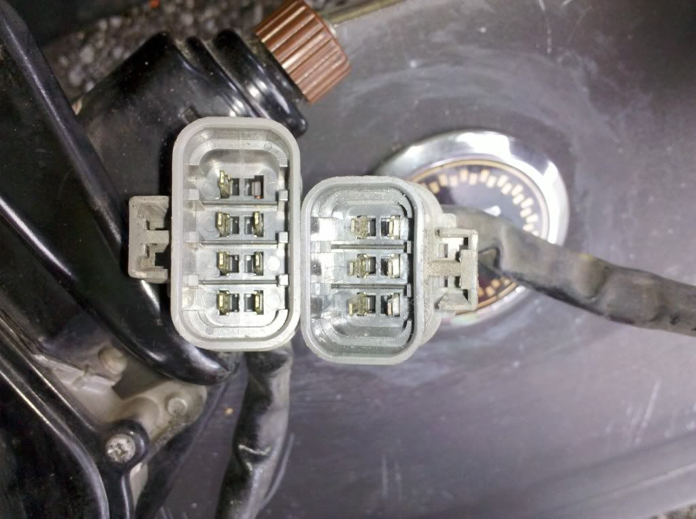

-
So far everything electrical on the 86 seems to be in working order except the headlights won't pop up. The light on the dash right under the button to pop them up is constantly on, even if the key is out. The only time its not on is when the battery is disconected. Not sure what that means but I'm sure its a sign of something not right with them not poppin up. Checked all the fuses, they are good. Not sure which relay is for the motors or if that's even the problem. Anybody have any advise for what the issue is?Hot Red 1987 Turbo VG30ET, VG33 heads, Isky 280/280 cams, SBE, gt3582r, Pucker factory intake/exhaust manifolds, ms3 pro goldbox, making 610whp at 29psi on e85 -
Everytime I've had that light stay on is when something (such as when the hood was misaligned) was holding the headlights from moving, it kept trying and trying until I removed the restriction.- VG30DET (HE341) 86 300ZX - 1982 280ZX Turbo - Headered NA 1986 300ZX 2+2 - 2000 Xterra - -
Well anyways Ive been messing with them some more and still cant get them to raise. Im starting to think motors. I took the motors out of the 86 and 88 and found that there is a relay right on the motor. So I swapped them over and still nothing. So then I was going to swap the motors themselves but realized that the plugs are different between the 86 and 88. The 86 has 7 pins and the 88 has 6. Motors are not seized because I can turn the knob and raise/lower them fully. Got the light on the dash to go out when I raised them and turned the lights on but as soon as I turned the lights off they wouldnt go down and that lights on the dash was back on. So I guess Ive only got a couple options left. 1, get motors with the same connector and see if thats the issue, 2, cut the connectors and wire them so I can use the known working 88 motors, or 3 wait till I get the motor/trans in and see if maybe the grounds for that would be why they wont raise.
Only problem with option 2 is I dont know what that 7th wire is for so I dont really want to do that unless its something uneeded. Anybody know? And for a referance here is a pic of the 2 connectors
Hot Red 1987 Turbo VG30ET, VG33 heads, Isky 280/280 cams, SBE, gt3582r, Pucker factory intake/exhaust manifolds, ms3 pro goldbox, making 610whp at 29psi on e85 -
From what I can tell with wiring diagrams, you cut splice the 6 pin connector into your 86 harness and it'll function fine with 87-89 headlight motors. The colors are the same and do the samr function, only the brown/yellow wire won't be used with the 87-89 motor, as 84-86 motors use the brown/yellow wire to energize the 2nd relay (external) and purple for the first relay (internal), but 87-89 uses the purple wire in series to energize both the internal and external relay, otherwise they're the same. Colors all match up, and the purple wire in the 84-86 harness will be capable of energizing the 2 relays in series like 87-89 does.
So:
84-86 headlight motor to 87-89 headlight motor:
(right side)
PURPLE - PURPLE
RED - RED
BROWN - BROWN
BLACK - BLACK
RED/YELLOW = RED/YELLOW
BROWN/YELLOW = NOT USED
(left side)
PURPLE - PURPLE
RED - RED
BROWN - BROWN
BLACK - BLACK
RED/GREEN - RED/GREEN
BROWN/YELLOW = NOT USED- VG30DET (HE341) 86 300ZX - 1982 280ZX Turbo - Headered NA 1986 300ZX 2+2 - 2000 Xterra - -
Have you hooked the motor wires to direct battery voltage to rule out bad motors? If they work, then you have a problem with relays, wiring, or even the switch.
1986 300ZX Turbo…sold
1990 Skyline GT-R…new money pit
2014 Juke Nismo RS 6-speed…daily -
relay would be on the driver's side inside a compartment behind the washer fluid tank. there was some discussion over modifying it to make the headlight up/down switch work independent of the headlight switch. -
Ok so Ive checked/replaced all the fuses, swapped every relay from known working relays in the 88, and still nothing. Ive got it down to this, either the motors are bad, the switch is bad, or I need to switch a couple wire locations to make the 88 dash harness work with the 86 chassis harness. According to what mikep and I were talking about there is slight differances in the way the headlights are wired. On my next day off Im going to put the 86 dash back in it and see if they pop up, if they do then I know my issue is switching a couple wires around.Hot Red 1987 Turbo VG30ET, VG33 heads, Isky 280/280 cams, SBE, gt3582r, Pucker factory intake/exhaust manifolds, ms3 pro goldbox, making 610whp at 29psi on e85 -
NissanEgg wrote: Have you hooked the motor wires to direct battery voltage to rule out bad motors? If they work, then you have a problem with relays, wiring, or even the switch.
1986 300ZX Turbo…sold
1990 Skyline GT-R…new money pit
2014 Juke Nismo RS 6-speed…daily -
Well Im happy to report the problem is fixed. But Im unhappy to report than Im an idiot. Reason the headlights wouldnt pop up was because I was trying to use the 88 dash harness in the 86. I wanted to use my 88 gauges but apparently after some research there is a slight differance in the way the headlight switch is wired and hence the reason they were not popping up. All is good now, got the 86 harness in the 88 dash and all works properly. I feel like such a n00b lol.Hot Red 1987 Turbo VG30ET, VG33 heads, Isky 280/280 cams, SBE, gt3582r, Pucker factory intake/exhaust manifolds, ms3 pro goldbox, making 610whp at 29psi on e85

Copyright © 2006–. All rights reserved. Privacy Policy